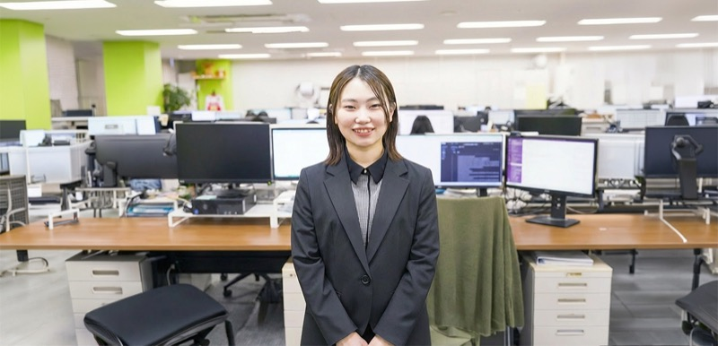
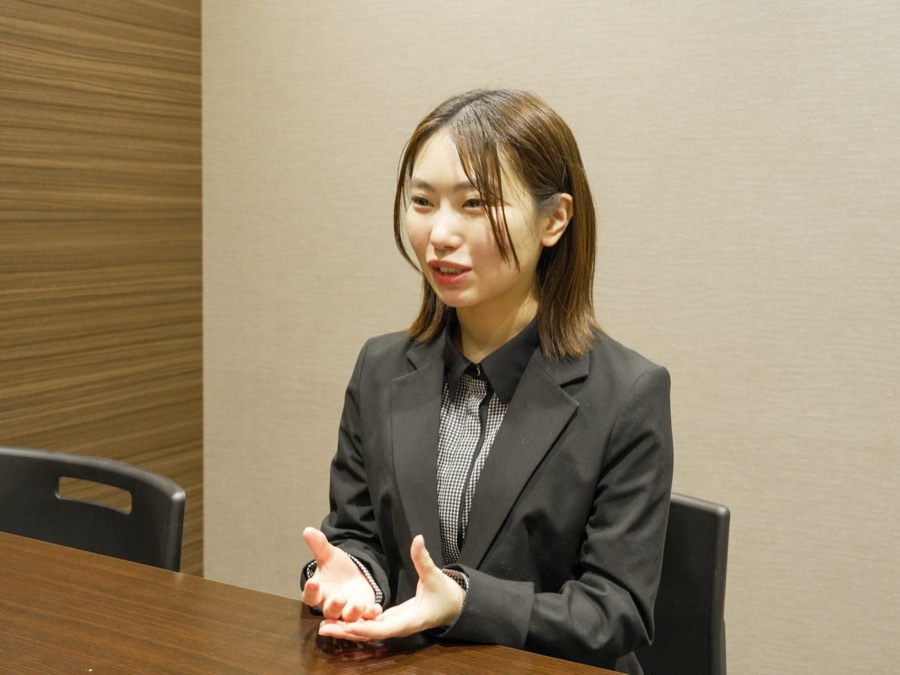
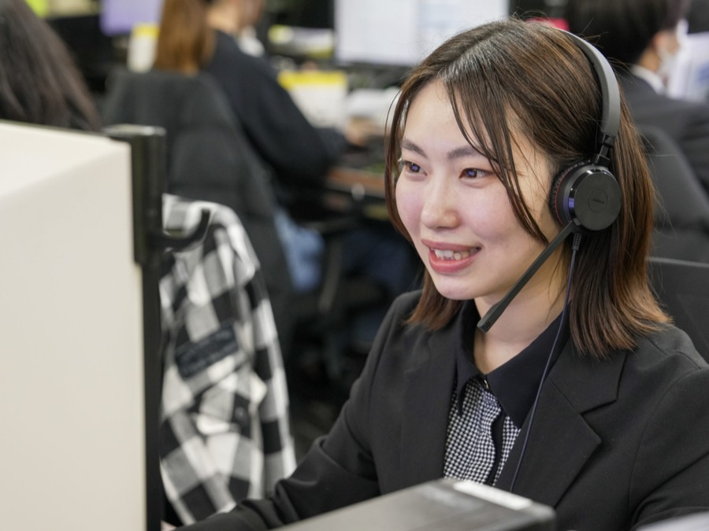
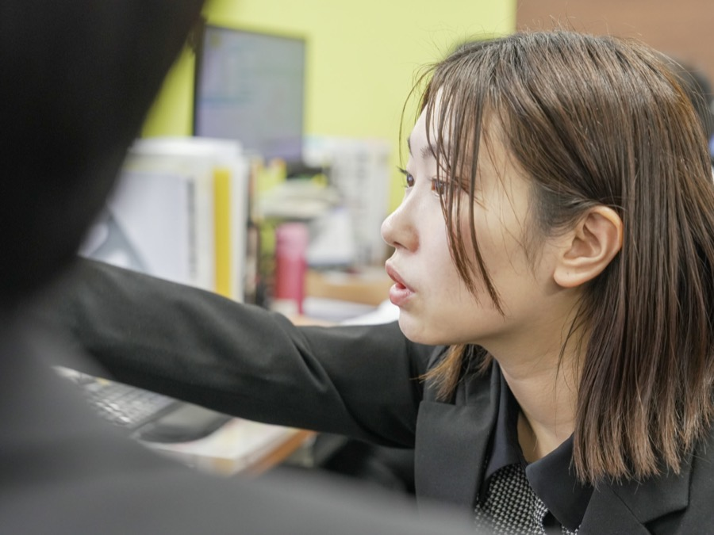

INTERVIEW 03
未経験からの挑戦を支えたのは、仲間の存在と伝え方への意識

01理想の環境と仲間の存在が未経験からの挑戦を後押し
これまでずっと飲食業界で働いてきましたが、未経験の職種に挑戦したいという思いからデスクワークを中心に仕事を探していました。数ある候補の中でカスタムジャパンを選んだ一番の決め手は、自転車で10分という家からの近さです。電車通勤のないストレスフリーな環境は、私にとって非常に魅力的でした。入社当時はバイクの知識が全くなく、何をどう調べればいいのかすらわからない状態でしたが、職場には同世代のスタッフが多く、何でも相談できる温かい雰囲気がありました。他部署との関わりも程よい距離感で、困ったときには周囲がさりげなく助けてくれる「人の良さ」が根付いています。この環境があったからこそ、全く知識のない状態からスタートした私でも、5年目という長い月日を積み重ねてこられたのだと心から感じています。

02言葉ひとつで信頼を築く、お客様の心に寄り添う対応
現在は、お客様からのメールや電話でのお問い合わせ対応をメインに担当しています。私たちの仕事は対面ではないからこそ、声のトーンや言葉選びといった「伝え方」が何よりも重要です。特にメーカー様とお客様の板挟みになるような難しい場面では、まずはお客様のお話を最後までしっかり聴き、親身に寄り添うことを大切にしています。こちらの意見を一方的に押し通すのではなく、寄り添う姿勢を見せることで、最終的に納得感のある着地点を見つけられるよう常に意識しています。以前、私の名前をメモしてくださり、電話のたびに「Tさん、いつもありがとう」と声をかけてくださるお客様がいました。自分の丁寧な対応が誰かの信頼に繋がり、直接感謝をいただける瞬間が、この仕事における一番の醍醐味であり、大きなやりがいとなっています。

03正社員として数字の成果を追求し、後輩に頼られる存在へ
アルバイトからキャリアをスタートさせ、業務の奥深さと温かい人間関係に惹かれていく中で、より深く会社の成長に貢献したいという思いが強まり、正社員への登用を希望しました。正社員になって大きく変わったのは「数字」への意識です。自分のアクションや工夫が、予算達成という具体的な成果として現れることに、今までになかった責任と面白さを感じています。また、現在は新人さんの教育にも携わっており、自分が未経験で苦労した経験を活かして、誰もが質問しやすい雰囲気づくりを大切にしています。今では後輩から頼られることに喜びを感じるようになりました。今後はさらに知識と経験を積み、周囲から一目置かれる存在として、自信を持ってチームを牽引していけるよう、真摯に業務に取り組んでいきたいです。
1日のスケジュール
- 出社、お客様からのメールチェック、社内連絡ツール（チャットワーク）確認
- お客様電話対応、タスク処理
- 休憩
- 当日出荷の受注チェック
- イレギュラー対応、タスク処理
- 日報作成、退社